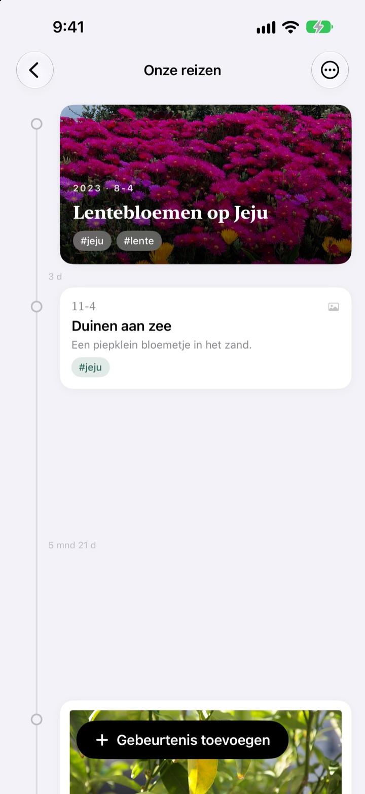
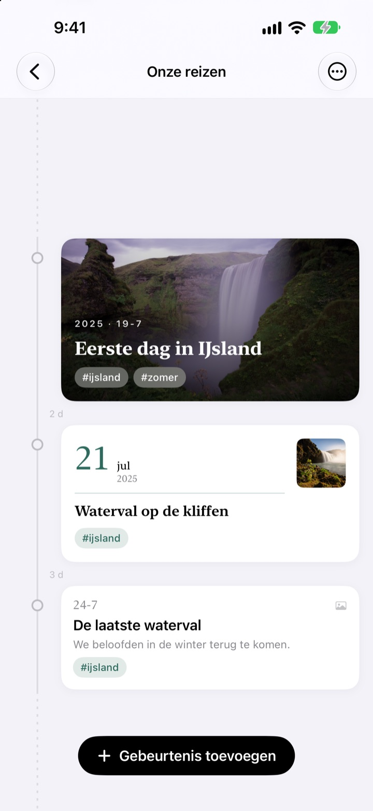
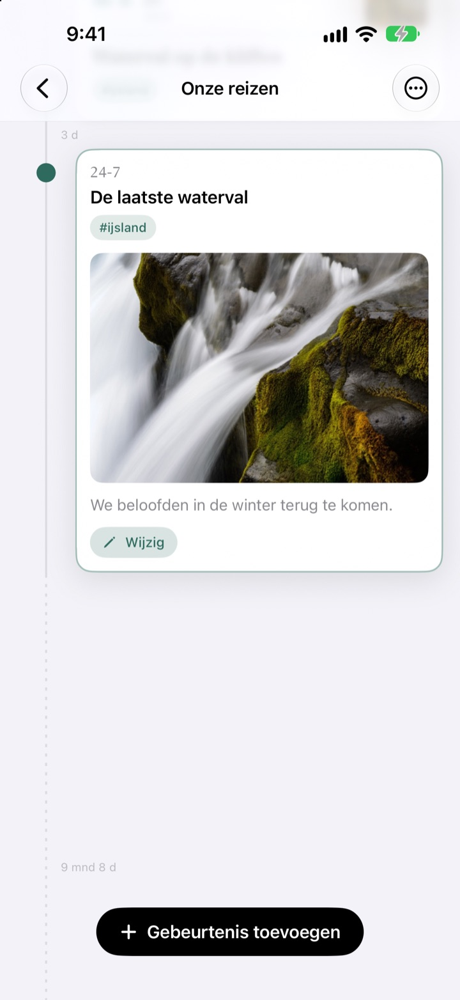
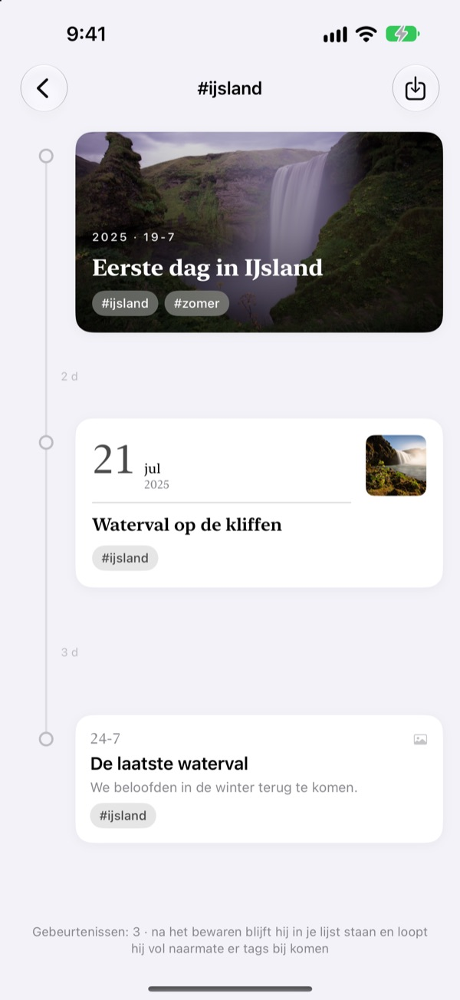
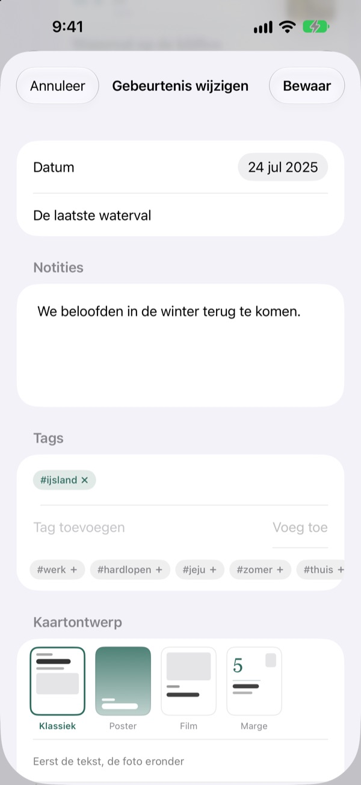

Een tijdlijn die
meerekt met de tijd
Drie dagen en vijf dagen staan in een verhouding van 3:5. Een lange pauze, zoals twee jaar en vier maanden, vouwt in tot een stippellijn. Aan de afstanden zie je al hoe de tijd toen verliep.
Alle functies zijn gratis. Voor iPhone en iPad.

Rek de afstanden zelf op
Elke knop zet een nieuwe gebeurtenis na de laatste. De afstand volgt dezelfde regel als in de app.
In je fotobibliotheek zie je geen tijd
Je fotobibliotheek zet alles op datum, maar drie dagen en twee jaar nemen er precies één stap in. Yeoul zet gebeurtenissen zo ver uit elkaar als de tijd ertussen, zodat je meteen ziet welke periodes vol waren en welke stil.
Afstand is tijd
De hele tijdlijn heeft één schaal: dezelfde periode is overal op het scherm even lang. Bij elke afstand staat de echte duur, zoals 3 d of 5 mnd 21 d.
Gebeurtenissen die heel dicht bij elkaar liggen krijgen toch wat ruimte, en hele lange pauzes vouwen in tot een stippellijn.

Hij vindt de foto's van die dag
Kies de datum en tik op Zoek bijbehorende foto’s om te zien wat je die dag fotografeerde. Niets passends? Met Zelf zoeken kies je er zelf een.
Tik op een gebeurtenis in de tijdlijn en foto en tekst klappen open op hun plek.

Eén tag verzamelt losse momenten
Geef gebeurtenissen een tag als #IJsland, tik erop, en alle gebeurtenissen met die tag, uit al je tijdlijnen, komen samen in een nieuwe.
Bewaar hem en hij blijft in je lijst staan, terwijl nieuwe gebeurtenissen met die tag vanzelf aansluiten.

Bij elk moment de juiste kaart
Klassiek zet de tekst voorop, Poster vult de kaart met je foto, Film omlijst hem als een afdruk en bij Marge staat een grote datum centraal. Het voorbeeld verandert meteen.

In drie stappen aan de slag
- 1
Maak een tijdlijn
Het eerste jaar van je kind, een relatie, een reis: elk met een naam en een kleur.
- 2
Voeg gebeurtenissen toe
Vul een datum en titel in en voeg een foto van die dag toe.
- 3
Geef tags
Gebeurtenissen met dezelfde tag komen samen, ook uit verschillende tijdlijnen.
Vier kaartontwerpen
- Klassiek
- De tekst staat voorop, de foto eronder.
- Poster
- De foto vult de hele kaart met een grote titel erover. Zonder foto krijgt de kaart de kleur van de tijdlijn.
- Film
- Een foto met een rand als een afdruk, typemachineletters en een datumstempel.
- Marge
- Een groot datumcijfer en een kleine foto. Hier spelen de woorden de hoofdrol.
Een nieuwe gebeurtenis begint met hetzelfde ontwerp als de nieuwste kaart in die tijdlijn.
Alle functies zijn gratis
Gratis
- Zoveel tijdlijnen als je wilt, met naam en kleur
- Foto's, verhalen en tags bij elke gebeurtenis
- Foto's van de dag van de gebeurtenis zoeken
- Bewaarde taglijnen
- Vier kaartontwerpen
- iCloud-synchronisatie tussen iPhone en iPad
- Vastleggen met Opdrachten en Siri
Steun de maker
- Kies een kleine, middelgrote of grote fooi
- Er wordt niets mee ontgrendeld. Het is gewoon een bedankje
Je vindt het in de instellingen van de app, wanneer je maar wilt.
Geen advertenties, geen abonnement.
Veelgestelde vragen
Waarom zijn de afstanden tussen gebeurtenissen zo verschillend?
Yeoul zet gebeurtenissen zo ver uit elkaar als de tijd die echt verstreek. Alle afstanden hebben dezelfde schaal, dus drie dagen en vijf dagen staan in een verhouding van 3:5. Heel dicht bij elkaar liggende gebeurtenissen houden een minimale afstand zodat ze niet overlappen, en heel lange pauzes vouwen in tot een stippellijn met de echte duur, zoals 2 jr 4 mnd.
Ik zie de foto's van die dag niet.
Zoeken op datum heeft toegang tot je foto's nodig. Sta die toe via Instellingen > Yeoul > Foto's. Yeoul zoekt foto's van middernacht tot middernacht op die dag, in de tijdzone van je apparaat. Wil je geen toegang geven? Tik dan direct eronder op Zelf zoeken.
Wat is een taglijn?
Tik op de tag van een gebeurtenis en Yeoul verzamelt alle gebeurtenissen met die tag, uit al je tijdlijnen, in één tijdlijn. Taglijnen die je vaak bekijkt kun je in je lijst bewaren. Er wordt niets gekopieerd: pas je de oorspronkelijke gebeurtenis aan, dan zie je dat hier ook, en als je een taglijn verwijdert, blijven de gebeurtenissen bestaan.
Waarom kan ik geen gebeurtenis toevoegen aan een taglijn?
Een taglijn is een weergave die per tag wordt samengesteld, geen bewaarplek. Er valt dus niet te bepalen bij welke tijdlijn een nieuwe gebeurtenis hoort. Voeg hem toe in zijn eigen tijdlijn met de tag, en hij verschijnt hier vanzelf.
Kan ik iets vastleggen zonder de app te openen?
Ja. Gebruik Gebeurtenis vastleggen in de Opdrachten-app of met Siri en kies alleen een tijdlijn en titel. Zonder datum wordt de huidige tijd gebruikt.
Zie ik mijn tijdlijnen ook op andere apparaten?
Ja, op elke iPhone en iPad die met hetzelfde Apple Account bij iCloud is ingelogd. Controleer via Instellingen > je naam > iCloud of iCloud aanstaat. Afhankelijk van je verbinding kan het even duren.
Hoe verwijder ik mijn gegevens?
Veeg een tijdlijn in de lijst naar links of tik op Wijzig. Met een tijdlijn verdwijnen ook de gebeurtenissen erin. Wat nog in iCloud staat, verwijder je via opslagbeheer in de iCloud-instellingen.
Ziet de maker mijn gegevens?
Nee. Je gebeurtenissen en foto's staan alleen op je apparaten en in je eigen iCloud, en de maker kan ze niet zien. De details staan in het privacybeleid hieronder.
Hoe meld ik een fout of stel ik iets voor?
Rechtstreeks via de instellingen in de app, per e-mail of op Instagram via @lee25_ios. Vermeld je apparaatmodel, iOS-versie en wat er gebeurde, dan kunnen we sneller helpen.
Vragen of ideeën? Mail naar leeo@kakao.com.